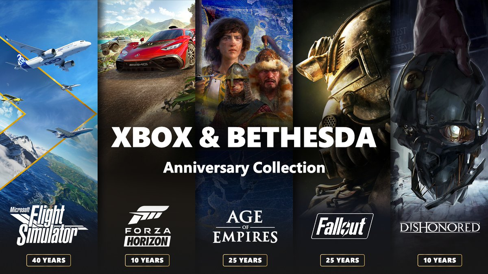

La temporada más espeluznante del año está por empezar y trae consigo disfraces, pesadillas, caballeros medievales, zombis, ratas y más. ¡Prepara tus controles y tu pantalla táctil para jugar los nuevos títulos que llegarán a Game Pass!
A partir de hoy, cinco icónicas franquicias celebran su aniversario con seis semanas de lanzamientos de contenido nuevo, actividades comunitarias y descuentos en juegos. Desde Microsoft Flight Simulator hasta Forza Horizon, cada una de estas franquicias que definen el género nos ha llevado por todo el mundo o nos ha sumergido en el páramo nuclear. Capturamos las principales actividades de cada franquicia para que tanto los fans como las personas que recién se integran puedan celebrar con nosotros. Visita a cada sección para obtener más información.